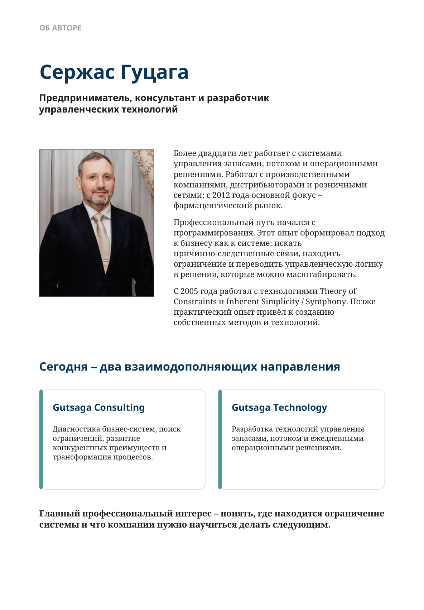
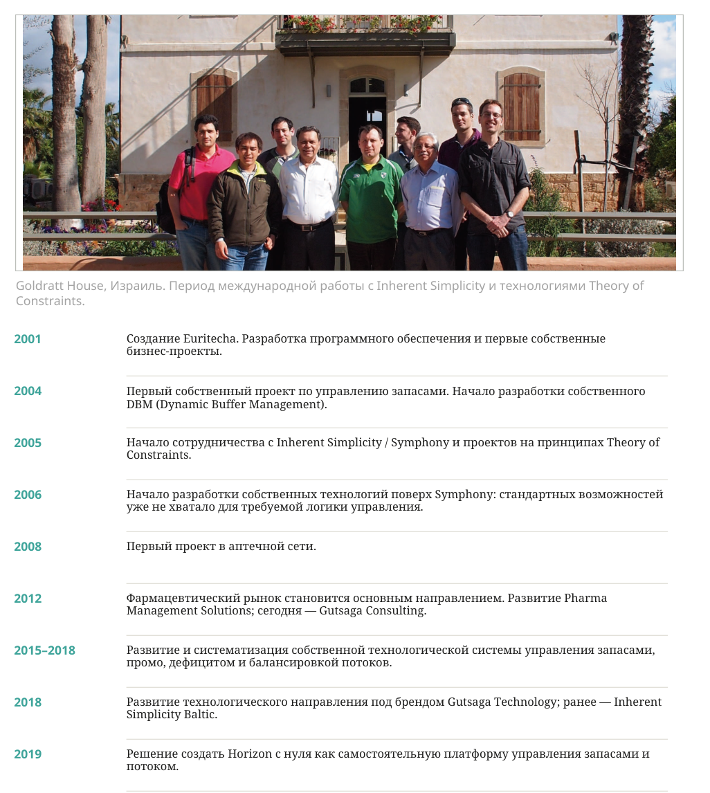

Об авторе
Сержас Гуцага
Предприниматель, консультант и разработчик управленческих технологий
Более двадцати лет работает с системами управления запасами, потоком и операционными решениями. Работал с производственными компаниями, дистрибьюторами и розничными сетями; с 2012 года основной фокус — фармацевтический рынок.
Профессиональный путь начался с программирования. Этот опыт сформировал подход к бизнесу как к системе: искать причинно-следственные связи, находить ограничение и переводить управленческую логику в решения, которые можно масштабировать.
С 2005 года работал с технологиями Theory of Constraints и Inherent Simplicity / Symphony. Позже практический опыт привёл к созданию собственных методов и технологий.
Сегодня — два взаимодополняющих направления
Gutsaga Consulting
Диагностика бизнес-систем, поиск ограничений, развитие конкурентных преимуществ и трансформация процессов.
Gutsaga Technology
Разработка технологий управления запасами, потоком и ежедневными операционными решениями.

Профессиональный путь
- 2001
- Создание Euritecha. Разработка программного обеспечения и первые собственные бизнес-проекты.
- 2004
- Первый собственный проект по управлению запасами. Начало разработки собственного DBM (Dynamic Buffer Management).
- 2005
- Начало сотрудничества с Inherent Simplicity / Symphony и проектов на принципах Theory of Constraints.
- 2006
- Начало разработки собственных технологий поверх Symphony: стандартных возможностей уже не хватало для требуемой логики управления.
- 2008
- Первый проект в аптечной сети.
- 2012
- Фармацевтический рынок становится основным направлением. Развитие Pharma Management Solutions; сегодня — Gutsaga Consulting.
- 2015–2018
- Развитие и систематизация собственной технологической системы управления запасами, промо, дефицитом и балансировкой потоков.
- 2018
- Развитие технологического направления под брендом Gutsaga Technology; ранее — Inherent Simplicity Baltic.
- 2019
- Решение создать Horizon с нуля как самостоятельную платформу управления запасами и потоком.
